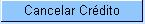

Cancelar Crédito a Realizar
Esta
opção do sistema permite cancelar um, ou mais créditos de um determinado imóvel.
O acesso a esta funcionalidade deve
ser realizado pelo "menu"
do sistema: "Gcom --> Faturamento --> Crédito a Realizar --> Cancelar Crédito a Realizar".
Inicialmente você
deverá informar
o imóvel, para o qual, deseja cancelar "Créditos a Realizar".
Após informar o
imóvel, o sistema apresentará as seguintes
informações:
- Dados do Imóvel
- Inscrição do Imóvel,
ao
lado do campo da matrícula do imóvel
- Localidade, Setor Comercial, Quadra, Lote e Sublote
- Nome do Cliente Usuário
- Descrição da
Situação da Ligação de
Água
- Descrição da
Situação da Ligação de
Esgoto
- Tabela com a
relação dos Créditos a Realizar do Imóvel que estão na situação "Normal".
- Mês e Ano de
Referência
- Tipo do Crédito
- Origem do Crédito
- Grupo Contábil
- Valor do Crédito
- Número de Prestações
- Prestações Cobradas
Neste momento, para cancelar o(s) "Crédito(s) a Realizar", você
deverá selecioná-los no "check-box" que fica
ao lado da crédito e clicar no botão.
O sistema irá apresentar
uma caixa de
diálogo, solicitando a confirmação do
cancelamento do(s) crédito(s) a realizar.
- OK --> Confirma o
Cancelamento.
- Cancelar -->
Desiste do
Cancelamento.
O sistema não efetuará o cancelamento do crédito a realizar, quando o usuário conectado não possuir senha especial, e ocorrerem uma das situações relacionadas abaixo:
- Imóvel com crédito em cobrança administrativa.
- O valor total do serviço for superior ao valor limite para o tipo de crédito
- O número de prestações for maior do que o número máximo permitido para o crédito
Preenchimento
dos campos
- Matrícula
do Imóvel(*): Informe
a matrícula de um imóvel e
tecle
“Enter”, ou clique no botão
“Pesquisar”
 , que fica ao lado do campo. Neste caso
será apresentada uma tela de “popup”,
onde será possível efetuar a pesquisa de
imóveis no cadastro. Após a
informação da matrícula de um
imóvel, ou da seleção de um
imóvel na
tela de pesquisa, o sistema atualizará as seguintes
informações na tela:
, que fica ao lado do campo. Neste caso
será apresentada uma tela de “popup”,
onde será possível efetuar a pesquisa de
imóveis no cadastro. Após a
informação da matrícula de um
imóvel, ou da seleção de um
imóvel na
tela de pesquisa, o sistema atualizará as seguintes
informações na tela:
- Inscrição do
Imóvel;
- Nome
do Cliente Usuário
- Situação
de Água
- Situação
de Esgoto
- Relação
dos Créditos a Realizar do
Imóvel
- Para limpar os campos
relacionados à matrícula do imóvel,
clique no
botão
"Limpar Campo"
 .
.
- Tabela de Créditos a Realizar do Imóvel(*): Após
informar o imóvel, o sistema irá atualizar esta tabela
com os "Créditos a Realizar" do imóvel que estejam com a
situação igual a "Normal".
- Mês e Ano de
Referência
- Tipo do Crédito
- Origem do Crédito
- Grupo Contábil
- Valor do Crédito
- Número de Prestações
- Prestações Cobradas
- Você deverá selecionar os "Créditos a Realizar" que deseja cancelar e clicar no botão .
Observação: Os campos
obrigatórios estão marcados um um asterisco
vermelho (*)
Funcionalidade
dos botões:
|
Botão
|
Descrição
|
|
|
Utilize
este botão
para ativar a funcionalidade "Pesquisar
Imóvel".
Deve ser
utilizado quando
você não souber qual é a
matrícula do
imóvel, para o qual, você deseja cancelar créditos a realizar.
|
|
|
Utilize este botão para limpar
as
informações existentes no campo
"Matrícula do Imóvel", e nos demais campos
relacionados. |
 |
Utilize
este botão para fazer com que a tela volte ao seu estado
inicial de exibição. |
 |
Utilize
este
botão para fazer com que o sistema encerre a tela sem salvar o
que
está sendo feito, e volte para a tela principal. |
|
Utilize este botão para solicitar ao sistema a
efetivação do cancelamento dos "Créditos a
Realizar" selecionados.
Após o clique neste botão o sistema irá solicitar
a confirmação do cancelamento através da
apresentação de uma caixa de diálogo. |
Tela
de Sucesso:
A tela de sucesso será
apresentada
após clicar no botão , não
houver nenhuma
inconsistência no conteúdo dos campos da tela, e
você confirmar o cancelamento,
na caixa de
diálogo.
O sistema apresentará a mensagem abaixo,
quando o cancelamento do(s) "Crédito(s) a Realizar" tiver sido
realizado com
sucesso.
"<<quantidade dos créditos a realizar cancelados>> Créditos(s) a Realizar do Imóvel <<matrícula
do imóvel>> cancelado(s) com
sucesso."
O sistema apresentará duas
opções, após o cancelamento dos "Creditos a Realizar". Escolha a
opção desejada clicando em
algum dos "hyperlinks" existentes na
tela de sucesso:
- Menu
Principal --> Para voltar à tela principal
do sistema.
- Cancelar outro Crédito a Realizar --> Para
ativar, novamente, a opção "Cancelar Crédito a Realizar".
Tópicos
Relacionados: